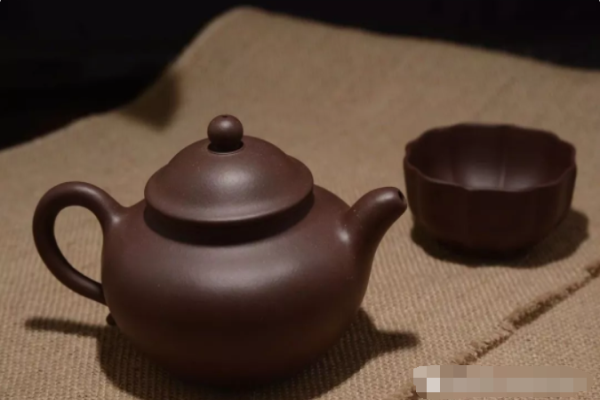
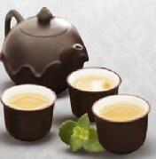

- 茶具简介
- 紫砂壶
- 盖碗
- 其他种类
茶具的简介
饮茶离不开茶具，茶具指泡饮茶叶的专门器具，包括壶，碗，杯，盘， 托等，古人讲究饮茶之道的另一个重要表现，是非常注重茶具的本身的艺术 ，一套精致的茶具配合色，香，味三绝的名茶，可谓相得益彰 保味功能好，泡茶不失原味，无茶具本身所带的异味，聚香含淑，色、香、味俱佳，且香不涣散，得茶之真香真味
保味功能好，泡茶不失原味，无茶具本身所带的异味，聚香含淑，色、香、味俱佳，且香不涣散，得茶之真香真味
 保味功能好，泡茶不失原味，无茶具本身所带的异味，聚香含淑，色、香、味俱佳，且香不涣散，得茶之真香真味
保味功能好，泡茶不失原味，无茶具本身所带的异味，聚香含淑，色、香、味俱佳，且香不涣散，得茶之真香真味 保味功能好，泡茶不失原味，无茶具本身所带的异味，聚香含淑，色、香、味俱佳，且香不涣散，得茶之真香真味
保味功能好，泡茶不失原味，无茶具本身所带的异味，聚香含淑，色、香、味俱佳，且香不涣散，得茶之真香真味






- 紫砂壶的使用
- 茶的色彩较为清淡，所以在选购紫砂壶的时分应当挑选用绿泥或段泥等外观色泽较浅的紫砂壶， 这么不管从赏茶还是养壶的角度来说都对比适宜。 有对比主要的一点，即是用于泡绿茶的紫砂壶应当尽量挑选壶壁薄一些的，原因是绿茶的冲泡温度不宜过高 ，壶壁薄一些的紫砂壶散热更快
-
紫砂壶
保味功能好，泡茶不失原味无茶具本身所带的异味 -
紫砂壶
保味功能好，泡茶不失原味无茶具本身所带的异味